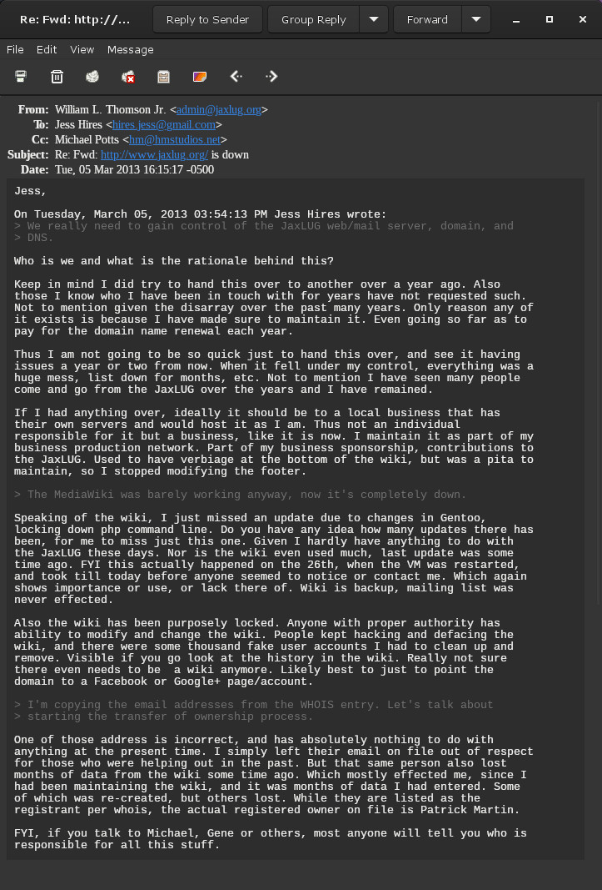
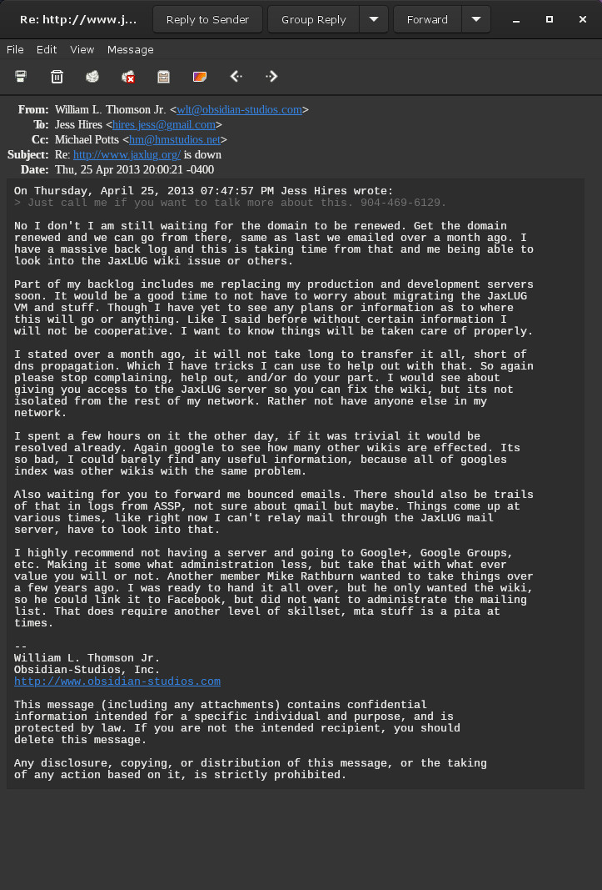
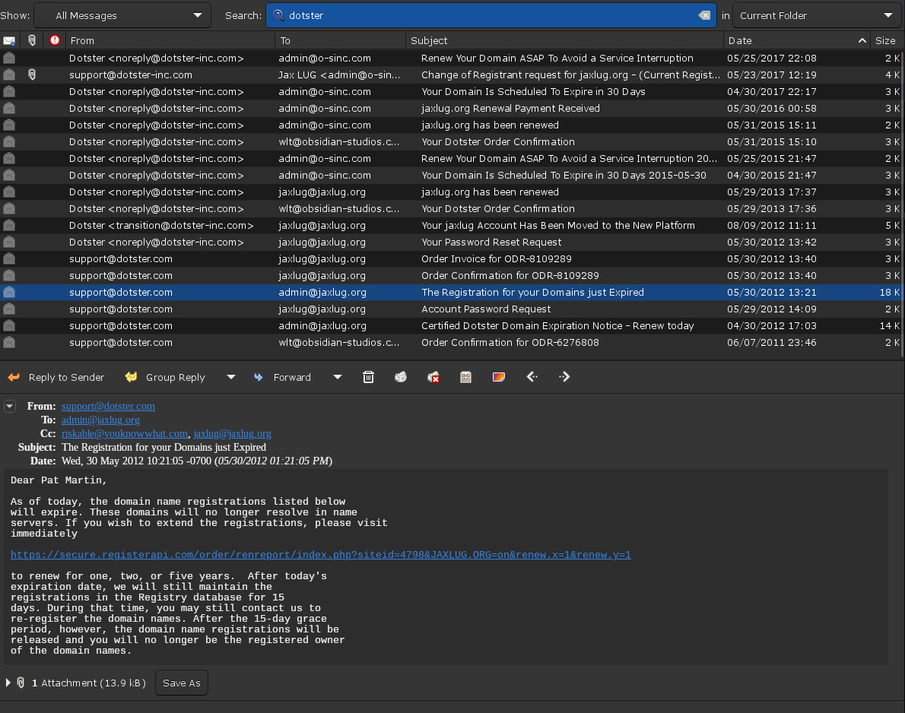
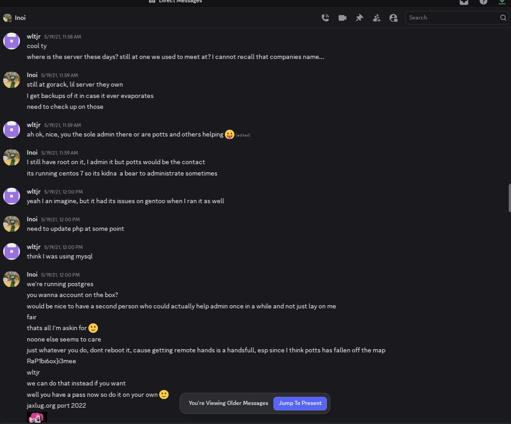

The Story of How JaxLUG.org was lost!
The Jacksonville Linux Users Group primary domain name from its inception in 1996 through 2023 was JaxLUG.org. This domain name has been lost. This page covers the story of how that happened. This page will be updated to fill in gaps in timeline as necessary, going through the past mailing list archive and emails keeps revealing long forgotten details.
We are in the process of recovering this lost domain name!
The Beginning Circa 2003
To begin for context, here is a message from Patrick Martin regarding JaxLUG.org domain name renewal in 2003 and, he renewed it again in 2004. This is for context as when you see the name Pat in subsequent email screenshots, you will have reference for who is Pat. For various reasons, past people were left on domain name records, respect, fail-safe, etc.
Jumping to 2010
Jumping to 2010, the domain was renewed through then, but started to exhibit issues as evident by this message from William L. Thomson Jr., who was responsible at this time for many aspects of the unofficial JaxLUG but was not on the domain record, or managing DNS, despite running in-house DNS servers, that still exist to this day; ns1.obsidian-studios.com (GA), ns2.obsidian-studios.com (CA). Shortly after, there were issues with the wiki/website, which William offered to take over along with DNS as evident in this message
Fast forward to 2013

Fast forwarding to 2013, 2 years after William L. Thomson Jr. sent this message to the group announcing he would be stepping down from various roles with the JaxLUG. However, a little over two years later, William was still stuck running various services for the group because no one could take over all services; William wanted to hand over a VM with Wiki, mailing list, etc, not piecemeal. One day William was contacted by Jess Hires, who William was unfamiliar with, and was unaware had become the new unofficial leader of the unofficial JaxLUG.
Now stop for a moment, you are a professional systems administrator, and someone you do not know emails you requesting access to a domain name record, and other services. Would you simply comply or verify?
For an act of good faith, given the JaxLUG.org domain name was up for renewal, William requested anyone who was not on record, Jess Hires, or any other to simply renew the domain. Most any registrar will accept money from anyone to renew a domain name. William has done it for his clients, and the request to Jess and others was nothing out of the ordinary; especially, for a domain that didn't belong to anyone for an unofficial group with no legal existence or rights.
The Final Years 2011 - 2017

William L. Thomson Jr. continued to renew the domain from 2011 to 2015, and finally in 2016, someone else renewed the domain and was added to the domain account. Then in 2017, the JaxLUG.org domain name was transferred to another registrar and managed by a consortium. William was no longer on record, received expiration, or other notifications, nor any past others like Dan McDougal (aka Riskable) and Patrick Martin, both of which were left on record by William, as stated initially, out of respect, fail-safe, etc. This tradition was broken in 2017.
The names seen in screenshot such as Patrick Martin reflect that jaxlug.org primary owner was still Patrick as of 2017, with Dan McDougal (aka Riskable) also on file. All emails seen in the screenshot were sent to email address that William had direct access to, thus being able to produce the screenshot. Again, reflecting that the jaxlug.org domain record always contained multiple of those prior and current.
The Unknown Years 2017 - 2021

What happened after 2017, will have to be filled in at a later date and this section possible renamed. What is known is that as of 2021, the JaxLUG.org domain name was still owned and being used as evident by this DM on Discord between Dan Bidleman (inoi) and William L. Thomson Jr. (wltjr), where Dan was soliciting Williams help once again to perform various task for the unofficial JaxLUG that no others were willing to do.
William did not take up Dan's offer, despite being given access due to prior treatment from the unofficial group.
The Year of the Loss 2023!
The exact date is unknown, but as evident by the Internet Archive (Wayback Machine) the JaxLUG.org domain name was lost sometime in 2023. Unfortunately, the domain name currently points to some business and at times Visit Jacksonville website.
The END! Or is it?
We are working to recover this lost domain, which will be a time consuming and expensive process, but can be done now that JaxLUG™ is owned IP by the Jacksonville Linux Users Group, Inc. a Florida Non-Profit! Stay tuned as the story will continue...